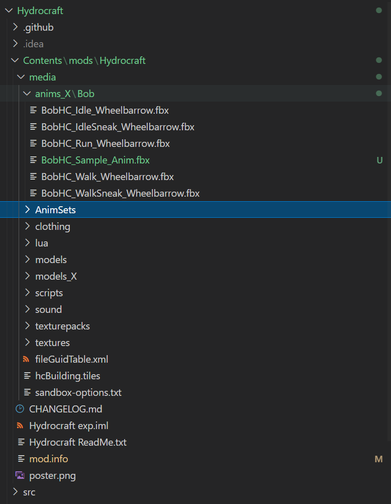
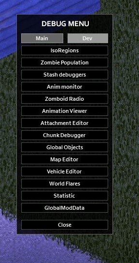
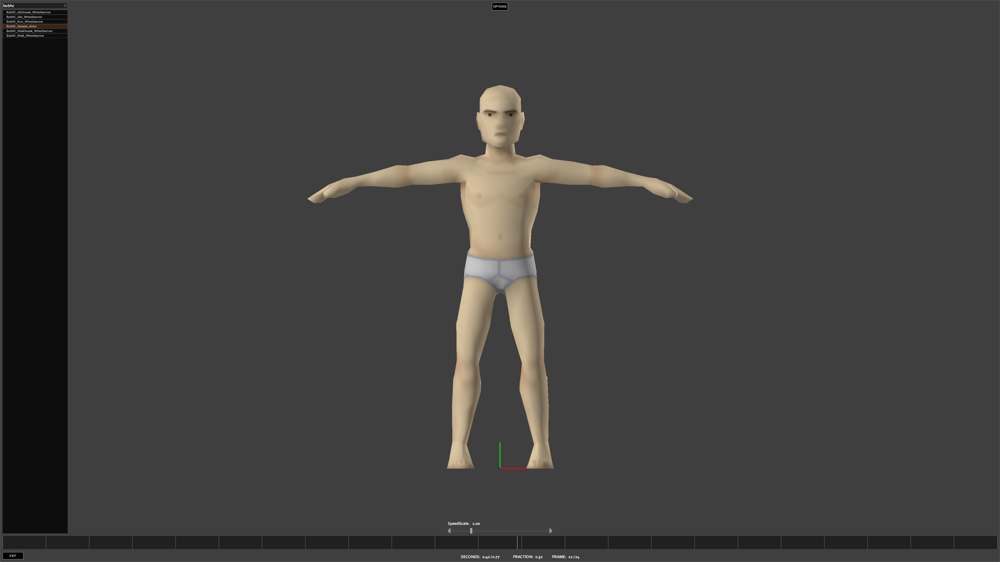

In your mod’s folder, if you don’t yet have a directory called anims_X, create one. Creat a subfolder called Bob, then place your .fbx file into it.

Now, the first thing I like to do is make sure that my base animation is getting loaded correctly by the game. Launch your game in debug mode (add -debug to launch options in steam), load up a single player game and then open up the debug menu. There’s an option under the Dev tools called “Animation Viewer”.

Click on it to open up the animation viewer. Then, in the search bar look up the name of your action. Remember this is the name of the actual ACTION in your file, which hopefully also matches the filename itself if you followed my advice on the previous page. If your animation shows up here and plays like you expect then congrats! You’re 90% of the way there.
